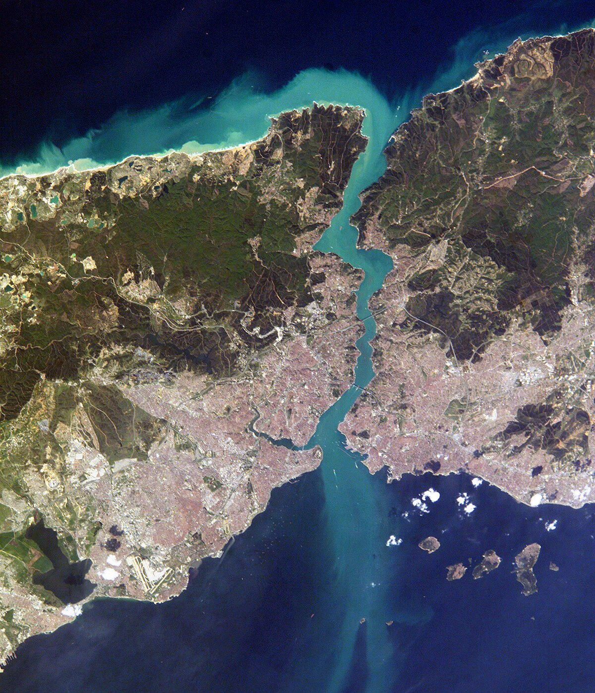

Uno de los pasos marítimos más estratégicos del mundo. Separa Europa de Asia atravesando una metrópolis.
El Bósforo conecta el Mar Negro con el Mar de Mármara. Es un desafío técnico constante:
Es la única salida al océano para Rusia y Ucrania. Por aquí pasan:
Granos y Trigo de Ucrania para el mundo.
Petróleo ruso hacia Europa y Medio Oriente.
Tratado que otorga a Turquía el control. Garantiza el paso comercial pero permite bloquear buques de guerra en conflictos, como ocurre actualmente.
| Indicador | Detalle |
|---|---|
| Congestión | Los barcos a menudo deben esperar días fondeados. |
| Riesgo Urbano | Un accidente petrolero sería catastrófico en el centro de Estambul. |
💬 Debate: Geopolítica
✍️ OpinarCargando opiniones...